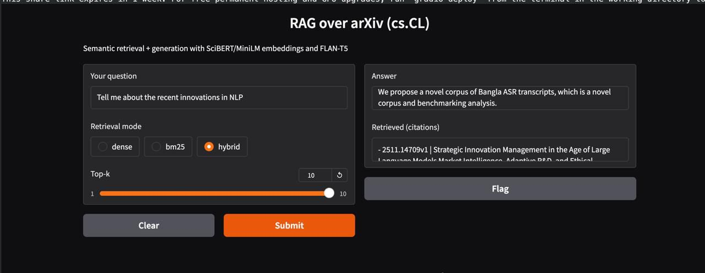

RAG System for NLP Research Papers
Built an end-to-end retrieval pipeline over 1,000+ arXiv NLP papers and 13,000+ chunks using FAISS + BM25 hybrid retrieval and embedding evaluation.
Python
FAISS
SciBERT
BM25
RAG